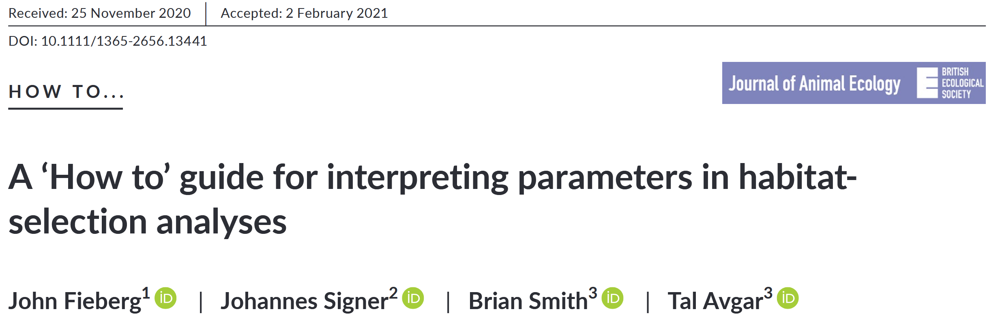
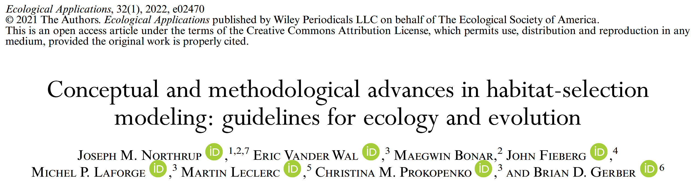
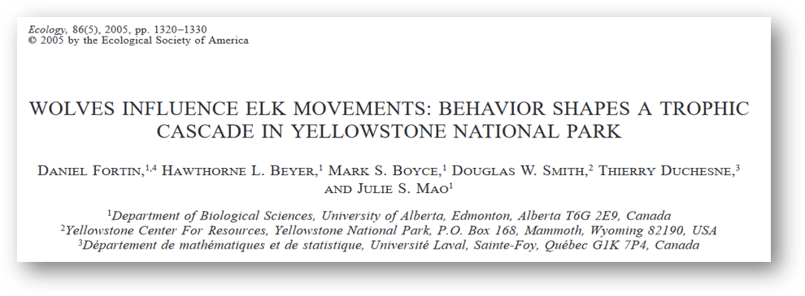
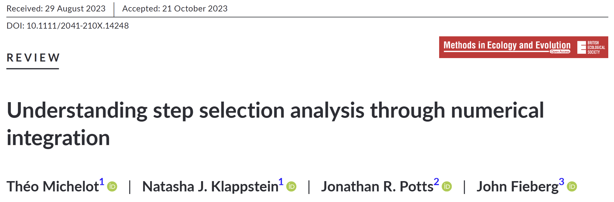

Habitat Selection Analysis
2026-02-13
Agenda
Today
8:00 am - 2:00 pm
- Introductions and review of Wednesday (~ 8:00 - 8:30)
- RSFs and SSFs (lecture; ~ 8:30 - 10:00)
- Fitting SSFs in R (R walkthrough; ~ 10:00 - 11:00)
- Lunch (~ 11:00 - 12:00)
- SSFs with GAMs (lecture; ~ 12:00 - 12:45)
- SSFs with GAMs in R (code walkthrough; ~ 12:45 - 1:30)
- Questions/spare time (~ 30 minutes)
Resources for RSFs and SSFs

Resources for RSFs and SSFs

Resources for RSFs and SSFs

What is habitat selection?
Terminology
- Environmental Space vs. Geographic Space
- Habitat
- Availability
- Use
- Selection
We will primarily use the terminology and notation of Matthiopoulos et al. (2023).
Note that Lele et al. (2013) is another good source for this information, with similar definitions.
Terminology
Environmental space
- E-space
- The space defined by environmental variables, e.g., temperature and precipitation.

Geographic space
- G-space
- The space defined by physical dimensions, e.g., easting and northing or longitude and latitude.

Terminology
- Habitat
- A point in E-space defined by a set of resources, risks, and conditions.

Terminology
- Availability
- The distribution of habitats that could have been used by an animal during a study period.
We will denote as \(f_a(x)\), where \(x\) is a point in E-space.

Terminology
- Use
- The distribution of habitats (observed to be) used by an animal during a study period.
We will denote as \(f_u(x)\), where \(x\) is a point in E-space.

Terminology
- Selection
- The process by which an organism uses a habitat disproportionately (more or less) compared to that habitat’s availability.
We will denote as \(w(x)\), where \(x\) is a point in E-space.

Terminology
- Selection = Use vs. availability, i.e., \(w(x) \propto \frac{f_u(x)}{f_a(x)}\).
- \(w(x) > 1 \Rightarrow\) positive selection
- \(w(x) = 1 \Rightarrow\) no selection (used in proportion to availability)
- \(w(x) < 1 \Rightarrow\) negative selection (avoidance)
- Most common form for \(w(x)\) is an exponential function w/o intercept
\[w(x) = exp[\beta_1 h_1(x) + \beta_2 h_2(x) + ... ]\]
Classifying environmental variables
Habitat selection theory posits that habitat selection behavior evolves because of the effect of habitats on fitness (Rosenzweig 1981, 1991).
Since habitat is defined by a set of environmental variables, it is useful to categorize these variables by the effects they have on fitness.
- Matthiopoulos et al. (2015) suggested classifying environmental variables into resources, risks, and conditions.
Classifying environmental variables
Resources
“Environmental variables whose density has a positive and monotonic relationship with fitness (i.e., the more, the better).”
— Matthiopoulos et al. (2015)
Classifying environmental variables
Risks
“Risks are environmental variables that have a negative relationship with fitness by lowering the actual or perceived chances of individual survival or reproduction.”
— Matthiopoulos et al. (2023)
Classifying environmental variables
Conditions
“Conditions are environmental variables (such as ambient temperature, humidity, salinity or pressure) that surround the organism and influence its functioning. Crucially, conditions can have both positive and negative influences on fitness.”
— Matthiopoulos et al. (2023)
Take-home messages
Habitats are any point we measure in E-space.
It is useful to classify environmental variables (habitat dimensions) as resources, risks, or conditions.
Habitat selection is the process by which habitat use is disproportionate (higher or lower) to habitat availability.
The most common form of \(w(x)\) in the literature is known as the exponential habitat selection function.
Scales of Habitat Selection
Scales of habitat selection
Habitat selection is use vs. availability.
The data we collect are samples of use.
Our inference depends on our definition of availability.
How we define availability depends on the scale of inference we desire.
Scales of habitat selection
Johnson (1980) defined four hierarchical scales of habitat selection.
First-order selection: where the species range occurs on Earth (species distribution models).
Second-order selection: where the home range of an individual is placed within the species range.
Third-order selection: which components, e.g., feeding sites, are used within an individual’s home range.
Fourth-order selection: which actual features are used at a specific site, e.g., specific food items from a feeding site (microhabitat selection).
First order: species distribution/population range

Second order: home range within population range

Fig. 1 from DeCesare et al. (2012)
Third order: used locations within home range

Fourth order: individual resources

Scales of habitat selection
What do we typically define as available for each scale?
First-order selection: all habitats on the globe or continent
Second-order selection: all habitats within the species’ distribution or the entire study area.
Third-order selection: all habitats within a fitted home range (e.g., within a 100% MCP).
Fourth-order selection: not usually done with location data, often comparing particular diet items or refuge types.
Scales of habitat selection
What do we typically define as available for each scale?
Availability is defined subjectively to answer a particular question.
These scales are useful guides, but make the right choice to answer your question.
Take-home messages
Defining availability for the purposes of measuring habitat selection is crucial.
Careful consideration of the scale of habitat selection can help guide the definition of availability.
Choose the right availability to answer your question.
Simple Habitat Selection Example
Simple example
Say that you’ve been tracking an individual animal, and this is the breakdown of the percentage of relocations you have in each habitat.

Simple example
| Habitat Type \(x\) | Used \(f_u(x)\) | Available \(f_a(x)\) |
|---|---|---|
| Grassland | 80% | |
| Forest | 15% | |
| Wetland | 5% |
Which habitat is most important to our study animal?
How much do they “like” it?
Simple example
| Habitat Type \(x\) | Used \(f_u(x)\) | Available \(f_a(x)\) |
|---|---|---|
| Grassland | 80% | 90% |
| Forest | 15% | 5% |
| Wetland | 5% | 5% |
Which habitat is most important to our study animal?
How much do they “like” it?
Did your answer change?
Simple example
| \(x\) | \(f_u(x)\) | \(f_a(x)\) | \(w(x)\) |
|---|---|---|---|
| Grassland | 80% | 90% | 0.889 |
| Forest | 15% | 5% | 3.000 |
| Wetland | 5% | 5% | 1.000 |
- \(w(x) > 1 \Rightarrow\) positive selection
- \(w(x) = 1 \Rightarrow\) no selection (used in proportion to availability)
- \(w(x) < 1 \Rightarrow\) negative selection (avoidance)
Simple example
| \(x\) | \(f_u(x)\) | \(f_a(x)\) | \(w(x)\) | \(log[w(x)]\) |
|---|---|---|---|---|
| Grassland | 80% | 90% | 0.889 | -0.118 |
| Forest | 15% | 5% | 3.000 | 1.099 |
| Wetland | 5% | 5% | 1.000 | 0.000 |
log-transforming \(w(x)\) makes selection correspond to \(-/0/+\):
- \(log[w(x)] > 0 \Rightarrow\) positive selection
- \(log[w(x)] = 0 \Rightarrow\) no selection (used in proportion to availability)
- \(log[w(x)] < 0 \Rightarrow\) negative selection (avoidance)
How can we generalize this to a more complex e-space?
Inhomogeneous Poisson Point Process
What is an inhomogeneous Poisson point process?
- A model for events in geographic space where the expected density of points depends on local spatial predictors through a spatially varying intensity function.
We will denote the intensity function at location \(s\) in geographic space as \(\lambda(s)\).
The number of events in any given region is assumed to be Poisson distributed, with mean (and variance) given by the average intensity function over the region.
Abbreviated IPP (Inhomogeneous Point Process).
What is an inhomogeneous Poisson point process?
- Many common space-use models have been shown to be equivalent to the IPP (reviewed in Fieberg et al. 2021).
- MaxEnt
- Weighted distribution theory (with an exponential form)
- Resource utilization functions (RUFs)
- Resource selection functions (RSFs), a.k.a. habitat selection functions (HSFs)
Habitat Selection Functions
Fitting IPP Models to Telemetry Data
Habitat Selection Functions (HSFs)
Using the IPP framework, we can model the intensity function in space, \(\lambda(s)\) as a function of \(k\) environmental predictors (the habitat axes):
\[log[\lambda(s)] = \beta_0 + \beta_1 h_1(s) + ... + \beta_k h_k(s)\]
\[\Rightarrow\]
\[\lambda(s) = exp[\beta_0 + \beta_1 h_1(s) + ... + \beta_k h_k(s)]\]
Habitat Selection Functions (HSFs)
The intensity in geographic space, \(\lambda(s)\), is proportional to the habitat selection function in environmental space, \(w(x)\) (Matthiopoulos et al. 2023).
\[\lambda(s) \propto w(x(s))\]
where \(x(s)\) is the value of the habitat dimensions (the E-space coordinates) at the location \(s\) in G-space.
Habitat Selection Functions (HSFs)
The spatial events we are focused on modeling here are telemetry relocations.
- Absolute density of points depends on frequency and duration of telemetry
- i.e., it is not of biological interest.
- This implies that \(\beta_0\) is not of biological interest.
How do we fit an HSF?
If we are working in discrete space, we can count the number of relocations in a grid cell and model the count using a Poisson GLM.
\[log[\lambda(s)] = \beta_0 + \sum_{j=1}^k \beta_j h_j(s)\]
\[y(s) \sim Poisson\left(\lambda(s)\right)\]
(Note that the area of a pixel should be included as an offset – explained in Fieberg et al. 2021).
How do we fit an HSF?
If we are working in continuous space, we can randomly sample available locations, code our used locations as 1 and our available locations as 0, and then use a binomial GLM (i.e., logistic regression).
\[logit[\lambda(s)] = log\left[\frac{\lambda(s)}{1 - \lambda(s)}\right] = \beta_0 + \sum_{j=1}^k \beta_j h_j(s)\]
\[y(s) \sim Binomial\left(N = 1, p = \lambda(s)\right)\]
This is the most common approach for fitting HSFs.
Note the similarity
Poisson
\[log[\lambda(s)] = \beta_0 + \sum_{j=1}^k \beta_j h_j(s)\]
Binomial
\[logit[\lambda(s)] = log\left[\frac{\lambda(s)}{1 - \lambda(s)}\right] = \beta_0 + \sum_{j=1}^k \beta_j h_j(s)\]
Poisson vs. Binomial
\[0 < \lambda(s) << 1\] \[\Rightarrow\] \[\log[\lambda(s)] \approx log\left[\frac{\lambda(s)}{1 - \lambda(s)}\right]\]
Poisson vs. Binomial
Also note that the Poisson is a limiting case of the Binomial distribution when \(N\) gets very large and \(p\) gets very small.
What does this mean for fitting HSFs?
Our binomial GLM is only a good approximation for the IPP model when the number of available locations gets large \((\rightarrow \infty)\), which implies:
- \(E[logit(\lambda(s))] \rightarrow 0\)
- Binomial \(\rightarrow\) Poisson
What does this mean for fitting HSFs?
We already mentioned that the intercept of the IPP from telemetry data is not of biological interest.
The intercept of the logistic regression is related to the ratio of 0s and 1s and so is furthermore not the intercept of the IPP.
However, the other \(\beta\) parameters converge to the slopes of the IPP model as the number of available points tends to infinity (Warton and Shepherd 2010).
Further, assigning “infinite weights” to available points ensures this equivalence with the IPP (Fithian and Hastie 2013).
Important assumptions
Standard assumptions of GLMs apply!
E.g., the independence assumption, i.e., any clustering in space is explained by covariates.
- Doesn’t mean no autocorrelation in raw data!
- Autocorrelation must be due to habitat autocorrelation.
- Should be no residual autocorrelation.
Take-home messages
- The IPP model underlies many common space-use models, including HSFs.
- The IPP models point density.
- The IPP models point density.
- The HSF models density of points (telemetry locations) as a function of habitat.
- We use logistic regression to fit the HSF.
- The number of available points should be large.
- The available points should be given large weights.
- The resulting intercept is not of interest (so ignore it), but the slopes measure habitat selection.
Relative Selection Strength
Effect Sizes from Habitat Selection Models
How do we interpret our fitted HSAs?
Avgar et al. (2017) called this ratio “Relative Selection Strength” (RSS).
\[RSS(x_1, x_2) = \frac{w(x_1)}{w(x_2)}\]
“how many times more points we expect in habitat \(x_1\) than in habitat \(x_2\) if they were equally available.”
log-RSS
Avgar et al. (2017) also suggested using log-RSS, since \(w(x)\) is an exponential function. With a bit of algebra, we can see:
\[log[RSS(x_1, x_2)] = log\left[\frac{w(x_1)}{w(x_2)}\right]\]
\[ = log[w(x_1)] - log[w(x_2)]\]
\[ = g(x_1) - g(x_2) \]
So log-RSS is just the difference in the linear predictors for the two habitats.
log-RSS
Avgar et al. (2017) also showed that the fitted \(\beta\)s are the log-RSS for a one-unit change in that habitat.
log-RSS
Avgar et al. (2017) also showed that the fitted \(\beta\)s are the log-RSS for a one-unit change in that habitat. We can see this in an example with 2 habitat axes. I.e.,
\[g(x) = \beta_1 h_1(x) + \beta_2 h_2(x)\]
Let’s calculate \(log[RSS(x_1, x_2)]\) where the only difference is 1-unit in the first habitat.
\[log[RSS(x_1, x_2)] = g(x_1) - g(x_2)\]
\[ = [\beta_1 h_1(x_1) + \beta_2 h_2(x_1)] - [\beta_1 h_1(x_2) + \beta_2 h_2(x_2)]\]
\[ = \beta_1[h_1(x_1) - h_1(x_2)] + \beta_2[h_2(x_1) - h_2(x_2)]\]
log-RSS
Note that any dimensions along which the habitats are the same have no effect on log-RSS (unless there are interactions in the model, more on that in a future lecture).
Note also that this gives us a way to intuitively think of each individual \(\beta\) (again, in models without interactions).
Take-home messages
- RSS is the most intuitive way to interpret an HSF.
- “How many times more points we expect in \(x_1\) vs. \(x_2\).”
- log-RSS is easier to calculate.
- It’s just the difference in the linear predictor for \(x_1\) vs. \(x_2\).
- The raw \(\beta\)s themselves are the log-RSS for a one-unit change in that habitat dimension.
Step Selection Functions
SSFs

SSFs

iSSFs

SSF vs. iSSF
SSF
- Sample available steps from empirical distribution
- Assumes a movement model
- Make inference only on habitat selection
- HS parameters biased
iSSF
- Sample available steps from a parametric distribution -Estimates a movement model
- Make inference on habitat selection and movement
Overview of iSSA
Availability in (i)SSA is defined at the step level.
Analyzed with conditional logistic regression, comparing used and available for each observed step paired with many available steps.
Allows time-varying covariates.
Overview of iSSA
Unlike unconditional HSFs, (i)SSFs are appropriate for movement data with high fix rates.
Overview of iSSA
Integrated step-selection analysis parameterizes two independent processes:
Movement-free habitat selection
Selection-free movement
These two processes combine to give rise to the observed movement trajectory.
Overview of iSSA
iSSA requires available steps to be sampled from a parametric distribution.
Distributions must be from the exponential family to be fit via GLM.
Movement parameters estimated by GLM adjust tentative distribution to estimate the parameters of the true selection-free movement distribution.
SSFs

Take-home messages
- Step selection functions extend habitat selection functions by including movement.
- The original formulation of SSFs assumed a movement process rather than estimating it.
- iSSFs estimate the movement process by assuming parametric distributions and still allow the use of conditional logistic regression for accessible model fitting.
- Realizing that SSFs can be estimated using other general tools can improve a general understanding of the model of interest, not the fitting method.
References
Avgar, T., S. R. Lele, J. L. Keim, et al. (2017). “Relative Selection Strength: Quantifying effect size in habitat- and step-selection inference”. In: Ecology and Evolution 7.14, pp. 5322-5330. DOI: 10.1002/ece3.3122.
DeCesare, N. J., M. Hebblewhite, F. Schmiegelow, et al. (2012). “Transcending scale dependence in identifying habitat with resource selection functions”. In: Ecological Applications 22.4, pp. 1068-1083. DOI: 10.1890/11-1610.1.
Fieberg, J., J. Signer, B. Smith, et al. (2021). “A ‘How to’ guide for interpreting parameters in habitat-selection analyses”. In: Journal of Animal Ecology 90.5, pp. 1027-1043. DOI: 10.1111/1365-2656.13441.
Fithian, W. and T. Hastie (2013). “Finite-sample equivalence in statistical models for presence-only data”. In: Annals of Applied Statistics 7.4, pp. 1917-1939. DOI: 10.1214/13-AOAS667.
Johnson, D. H. (1980). “The Comparison of Usage and Availability Measurements for Evaluating Resource Preference”. In: Ecology 61.1. ISBN: 0012-9658, pp. 65-71. DOI: 10.2307/1937156.
Lele, S. R., E. H. Merrill, J. Keim, et al. (2013). “Selection, use, choice and occupancy: clarifying concepts in resource selection studies”. In: Journal of Animal Ecology 82.6. Ed. by F. Huettmann. ISBN: 0021-8790, pp. 1183-1191. DOI: 10.1111/1365-2656.12141.
Manly, B. F. J., L. L. McDonald, D. L. Thomas, et al. (2002). Resource Selection by Animals. Dordrecht, The Netherlands: Springer Netherlands. ISBN: 978-1-4020-0677-7.
Matthiopoulos, J., J. R. Fieberg, G. Aarts, et al. (2015). “Establishing the link between habitat selection and animal population dynamics”. In: Ecological Monographs 85.3, pp. 413-436. DOI: 10.1890/14-2244.1.
Matthiopoulos, J., J. Fieberg, and G. Aarts (2023). Species-Habitat Associations: Spatial data, predictive models, and ecological insights. Second. University of Minnesota Libraries Publishing. ISBN: 978-1-946135-68-1. DOI: 10.24926/2020.081320.
Rosenzweig, M. L. (1981). “A Theory of Habitat Selection”. In: Ecology 62.2, pp. 327-335.
Rosenzweig, M. L. (1991). “Habitat Selection and Population Interactions: The Search for Mechanism”. In: The American Naturalist 137, pp. S5-S28.
Warton, D. I. and L. C. Shepherd (2010). “Poisson point process models solve the”pseudo-absence problem” for presence-only data in ecology”. In: Annals of Applied Statistics 4.3, pp. 1383-1402. DOI: 10.1214/10-AOAS331.
- See also Fieberg et al. 2021 Appendix A for coded HSF examples.
- See also Fieberg et al. 2021 Appendix B for coded SSF examples.